Dégustation d'hydromel et auto-cueillette
de fleurs
Une après-midi au studio. La dégustation d'hydromel québécois sera suivi d'une auto-cueillette de fleurs. Faites votre propre bouquet en autocueillette et apportez
votre vase !
Atelier de couronnes
de fleurs
Viens passer l'après-midi dans l'univers du studio floral. L'atelier débute à 13h00. Il vous permettra d'apprendre les techniques de création des couronnes de fleurs. Il sera suivi d'une ballade dans les champs de fleurs.
Abonnement 10 mois de bouquets de fleurs
Dépêchez-vous ! Quantités limitées. Nos plus belles fleurs du moment sont choisies avec soin et cueillies à la main. Chaque bouquet est accompagné d’une infolettre dans laquelle nous vous présentons les fleurs que vous recevez.
Nous offrons également un abonnement de bouquets de fleurs séchées durant les mois d'hiver.